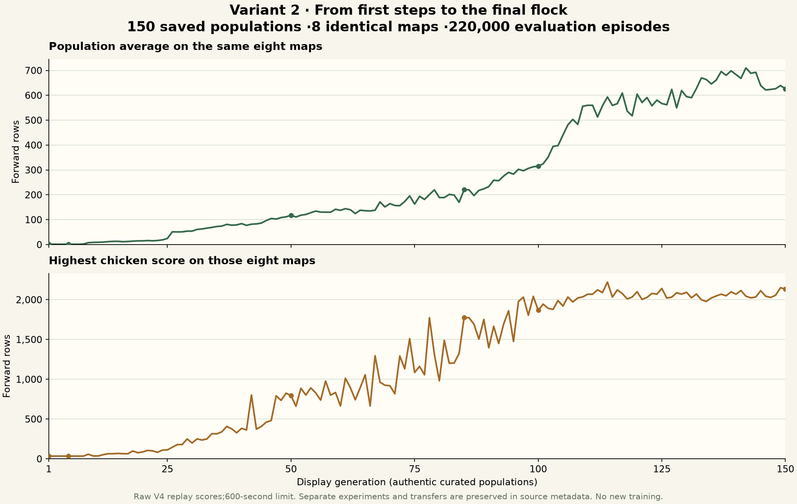

Every original chicken runs on the same eight maps under frozen V4 rules. The curve retains real variance. Display1–150 curates separate experiments, transfers and native continuations; it is not an uninterrupted150-generation training run.
220,000 evaluation episodes ·0 training episodes · reserved finals unopened. The population averages below are separate from the frozen final policy’s763.05 average on256 opened development maps.

Generation CSV · Map CSV · Raw evidence · Source populations and frozen policy
| Display | Population | Mean rows | Highest score | Native source |
|---|---|---|---|---|
| 1 | 100 | 1.16 | 34 | random-start /1 |
| 2 | 100 | 1.16 | 34 | random-start /2 |
| 3 | 100 | 1.16 | 34 | random-start /3 |
| 4 | 100 | 1.16 | 34 | random-start /4 |
| 5 | 100 | 1.16 | 34 | random-start /5 |
| 6 | 100 | 1.16 | 34 | early-selection /6 |
| 7 | 100 | 1.16 | 34 | early-selection /9 |
| 8 | 100 | 1.85 | 34 | early-selection /12 |
| 9 | 100 | 7.50 | 57 | early-selection /15 |
| 10 | 100 | 8.70 | 36 | early-selection /18 |
| 11 | 100 | 9.25 | 36 | early-selection /21 |
| 12 | 100 | 9.78 | 52 | early-selection /24 |
| 13 | 100 | 11.60 | 64 | early-selection /27 |
| 14 | 100 | 12.81 | 64 | early-selection /30 |
| 15 | 100 | 12.96 | 68 | early-selection /33 |
| 16 | 100 | 11.40 | 64 | early-selection /37 |
| 17 | 100 | 12.34 | 64 | early-selection /40 |
| 18 | 100 | 13.67 | 98 | early-selection /43 |
| 19 | 100 | 14.74 | 77 | early-selection /46 |
| 20 | 100 | 14.88 | 86 | early-selection /49 |
| 21 | 100 | 16.06 | 106 | early-selection /52 |
| 22 | 100 | 15.01 | 100 | early-selection /55 |
| 23 | 100 | 16.25 | 82 | early-selection /58 |
| 24 | 100 | 18.77 | 110 | early-selection /61 |
| 25 | 100 | 24.37 | 112 | early-selection /64 |
| 26 | 200 | 51.31 | 146 | transferred-road-skills /1 |
| 27 | 200 | 50.74 | 179 | transferred-road-skills /7 |
| 28 | 200 | 51.05 | 180 | transferred-road-skills /14 |
| 29 | 200 | 53.85 | 250 | transferred-road-skills /20 |
| 30 | 200 | 54.05 | 199 | transferred-road-skills /27 |
| 31 | 200 | 60.90 | 250 | transferred-road-skills /33 |
| 32 | 200 | 62.61 | 236 | transferred-road-skills /40 |
| 33 | 200 | 66.11 | 250 | transferred-road-skills /46 |
| 34 | 200 | 68.91 | 316 | transferred-road-skills /52 |
| 35 | 200 | 72.60 | 314 | transferred-road-skills /59 |
| 36 | 200 | 74.13 | 339 | transferred-road-skills /65 |
| 37 | 200 | 81.17 | 407 | transferred-road-skills /72 |
| 38 | 200 | 77.81 | 377 | transferred-road-skills /78 |
| 39 | 200 | 78.94 | 327 | transferred-road-skills /85 |
| 40 | 200 | 84.14 | 383 | transferred-road-skills /91 |
| 41 | 200 | 77.24 | 363 | river-adaptation /1 |
| 42 | 200 | 81.94 | 802 | river-adaptation /12 |
| 43 | 200 | 83.00 | 373 | river-adaptation /22 |
| 44 | 200 | 86.31 | 407 | river-adaptation /33 |
| 45 | 200 | 96.59 | 461 | river-adaptation /44 |
| 46 | 200 | 104.79 | 481 | river-adaptation /54 |
| 47 | 200 | 102.55 | 792 | river-adaptation /65 |
| 48 | 200 | 108.42 | 735 | river-adaptation /75 |
| 49 | 200 | 111.35 | 825 | river-adaptation /86 |
| 50 | 200 | 117.66 | 794 | river-adaptation /97 |
| 51 | 200 | 110.69 | 661 | river-adaptation /107 |
| 52 | 200 | 118.02 | 886 | river-adaptation /118 |
| 53 | 200 | 120.96 | 802 | river-adaptation /129 |
| 54 | 200 | 128.04 | 892 | river-adaptation /139 |
| 55 | 200 | 134.62 | 828 | river-adaptation /150 |
| 56 | 200 | 130.40 | 738 | river-adaptation /160 |
| 57 | 200 | 130.25 | 978 | river-adaptation /171 |
| 58 | 200 | 130.06 | 800 | river-adaptation /182 |
| 59 | 200 | 141.74 | 834 | river-adaptation /192 |
| 60 | 200 | 137.61 | 665 | river-adaptation /203 |
| 61 | 200 | 144.24 | 1,013 | river-adaptation /214 |
| 62 | 200 | 139.89 | 895 | river-adaptation /224 |
| 63 | 200 | 124.59 | 742 | river-adaptation /235 |
| 64 | 200 | 137.96 | 894 | river-adaptation /245 |
| 65 | 200 | 135.96 | 1,056 | river-adaptation /256 |
| 66 | 200 | 135.11 | 664 | consistent-crossings /257 |
| 67 | 200 | 138.07 | 1,295 | consistent-crossings /276 |
| 68 | 200 | 171.38 | 963 | consistent-crossings /296 |
| 69 | 200 | 151.29 | 925 | consistent-crossings /315 |
| 70 | 200 | 164.52 | 919 | consistent-crossings /334 |
| 71 | 200 | 156.98 | 818 | consistent-crossings /354 |
| 72 | 200 | 156.32 | 1,292 | consistent-crossings /373 |
| 73 | 200 | 173.19 | 1,132 | consistent-crossings /392 |
| 74 | 200 | 195.63 | 1,510 | consistent-crossings /412 |
| 75 | 200 | 162.67 | 1,085 | consistent-crossings /431 |
| 76 | 200 | 194.03 | 1,161 | consistent-crossings /450 |
| 77 | 200 | 181.33 | 1,056 | consistent-crossings /469 |
| 78 | 200 | 201.10 | 1,773 | consistent-crossings /489 |
| 79 | 200 | 219.83 | 1,312 | consistent-crossings /508 |
| 80 | 200 | 188.93 | 981 | consistent-crossings /527 |
| 81 | 200 | 188.92 | 1,489 | consistent-crossings /547 |
| 82 | 200 | 201.67 | 1,201 | consistent-crossings /566 |
| 83 | 200 | 198.88 | 1,204 | consistent-crossings /585 |
| 84 | 200 | 169.87 | 1,325 | consistent-crossings /605 |
| 85 | 200 | 220.20 | 1,774 | consistent-crossings /624 |
| 86 | 200 | 220.20 | 1,774 | native-guided-fitness /1 |
| 87 | 200 | 196.91 | 1,692 | native-guided-fitness /22 |
| 88 | 200 | 217.66 | 1,505 | native-guided-fitness /42 |
| 89 | 200 | 224.02 | 1,751 | native-guided-fitness /63 |
| 90 | 200 | 232.83 | 1,396 | native-guided-fitness /84 |
| 91 | 200 | 258.68 | 1,665 | native-guided-fitness /104 |
| 92 | 200 | 256.69 | 1,450 | native-guided-fitness /125 |
| 93 | 200 | 275.30 | 1,693 | native-guided-fitness /145 |
| 94 | 200 | 290.00 | 1,860 | native-guided-fitness /166 |
| 95 | 200 | 283.13 | 1,475 | native-guided-fitness /187 |
| 96 | 200 | 302.42 | 1,978 | native-guided-fitness /207 |
| 97 | 200 | 296.79 | 2,032 | native-guided-fitness /228 |
| 98 | 200 | 306.19 | 1,805 | native-guided-fitness /249 |
| 99 | 200 | 312.67 | 2,042 | native-guided-fitness /269 |
| 100 | 200 | 314.88 | 1,867 | native-guided-fitness /290 |
| 101 | 200 | 324.88 | 1,944 | native-guided-fitness /310 |
| 102 | 200 | 351.22 | 1,892 | native-guided-fitness /331 |
| 103 | 200 | 394.34 | 1,878 | native-guided-fitness /352 |
| 104 | 200 | 397.91 | 1,989 | native-guided-fitness /372 |
| 105 | 200 | 439.94 | 1,920 | native-guided-fitness /393 |
| 106 | 200 | 481.37 | 2,034 | native-guided-fitness /414 |
| 107 | 200 | 503.08 | 1,971 | native-guided-fitness /434 |
| 108 | 200 | 483.37 | 2,022 | native-guided-fitness /455 |
| 109 | 200 | 555.76 | 2,035 | native-guided-fitness /475 |
| 110 | 200 | 559.85 | 2,069 | native-guided-fitness /496 |
| 111 | 200 | 559.85 | 2,069 | native-refinement /1 |
| 112 | 200 | 513.18 | 2,123 | native-refinement /11 |
| 113 | 200 | 558.14 | 2,090 | native-refinement /21 |
| 114 | 200 | 593.31 | 2,221 | native-refinement /31 |
| 115 | 200 | 559.46 | 2,033 | native-refinement /41 |
| 116 | 200 | 566.47 | 2,123 | native-refinement /51 |
| 117 | 200 | 609.01 | 2,077 | native-refinement /61 |
| 118 | 200 | 536.37 | 2,010 | native-refinement /71 |
| 119 | 200 | 517.52 | 2,033 | native-refinement /81 |
| 120 | 200 | 604.48 | 2,100 | native-refinement /91 |
| 121 | 200 | 571.00 | 2,003 | native-refinement /101 |
| 122 | 200 | 590.91 | 2,029 | native-refinement /111 |
| 123 | 200 | 557.89 | 2,078 | native-refinement /121 |
| 124 | 200 | 580.55 | 2,070 | native-refinement /131 |
| 125 | 200 | 566.96 | 2,141 | native-refinement /141 |
| 126 | 200 | 562.08 | 2,021 | native-refinement /151 |
| 127 | 200 | 623.87 | 2,032 | native-refinement /161 |
| 128 | 200 | 549.71 | 2,087 | native-refinement /171 |
| 129 | 200 | 619.05 | 2,070 | native-refinement /181 |
| 130 | 200 | 594.68 | 2,093 | native-refinement /191 |
| 131 | 200 | 590.40 | 2,024 | native-refinement /202 |
| 132 | 200 | 627.65 | 2,071 | native-refinement /212 |
| 133 | 200 | 669.97 | 1,999 | native-refinement /222 |
| 134 | 200 | 663.41 | 1,978 | native-refinement /232 |
| 135 | 200 | 645.76 | 2,021 | native-refinement /242 |
| 136 | 200 | 661.12 | 2,047 | native-refinement /252 |
| 137 | 200 | 695.65 | 2,069 | native-refinement /262 |
| 138 | 200 | 680.34 | 2,049 | native-refinement /272 |
| 139 | 200 | 698.33 | 2,099 | native-refinement /282 |
| 140 | 200 | 683.57 | 2,069 | native-refinement /292 |
| 141 | 200 | 668.17 | 2,115 | native-refinement /302 |
| 142 | 200 | 709.99 | 2,044 | native-refinement /312 |
| 143 | 200 | 688.55 | 2,023 | native-refinement /322 |
| 144 | 200 | 692.52 | 2,034 | native-refinement /332 |
| 145 | 200 | 639.06 | 2,113 | native-refinement /342 |
| 146 | 200 | 621.55 | 2,044 | native-refinement /352 |
| 147 | 200 | 623.72 | 2,028 | native-refinement /362 |
| 148 | 200 | 626.33 | 2,056 | native-refinement /372 |
| 149 | 200 | 639.38 | 2,150 | native-refinement /382 |
| 150 | 200 | 625.75 | 2,133 | native-refinement /392 |